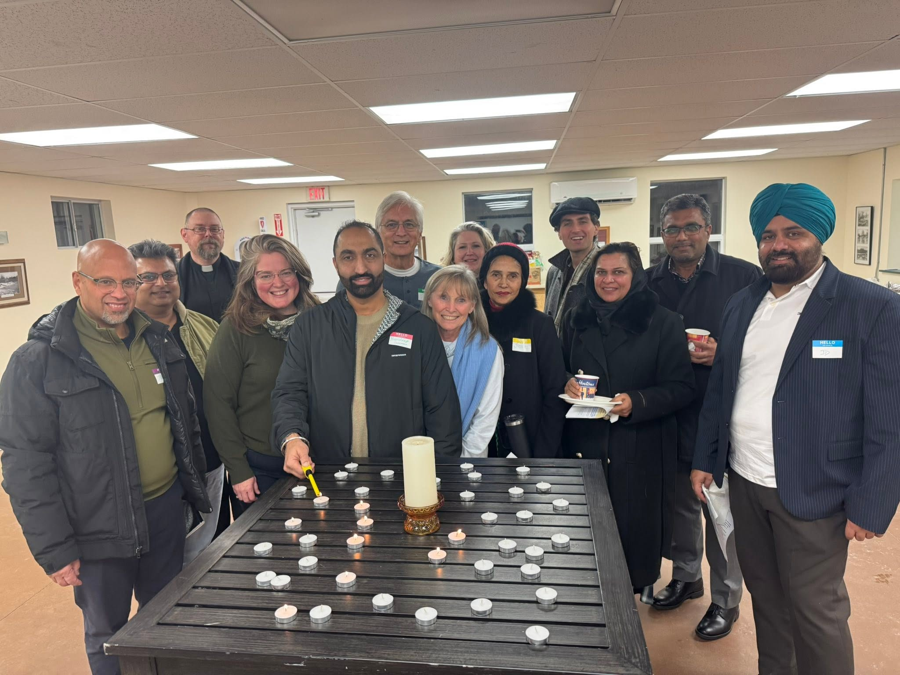

Deliver practical, neighbourhood-first leadership that fixes everyday problems — safer streets, smoother roads, responsible spending, cared-for parks and growth that respects Georgetown.
JASVIR FOR CITY COUNCILLOR · WARD 2 · GEORGETOWN
Protect what we love. Fix what we use every day.
A practical plan for smoother streets, safer neighbourhoods, responsible taxes, better parks and growth that keeps Georgetown feeling like legacy.

WHY JASVIR
Less noise. More neighbourhood results.
Ward 2 residents should be able to see where their tax dollars go, feel safe walking through local plazas, drive on roads that are properly maintained, and trust that growth is being managed with care.
Jasvir’s campaign is built around practical municipal priorities that affect daily life — with clear follow-through, sensible spending and a strong voice for Georgetown at Town Hall.



MISSION & VISION
A Georgetown that works better — without losing what makes it special.
A safer, better-kept and more affordable Georgetown where families move easily, public spaces thrive, and new development strengthens — rather than overwhelms — our small-town character.
THE WARD 2 PLAN
Six everyday issues.
Six clear commitments.
Focused on the things residents notice on the drive to work, the walk to school, the trip to the park and the property tax bill.
Roads you can rely on
Fix potholes faster and smooth out neighbourhood streets so everyday drives are safer, easier and less frustrating.
Potholes · resurfacing · maintenanceSafer local plazas
Push for better lighting and stronger patrol visibility to deter theft and make local commercial areas feel safer.
Lighting · patrols · preventionSlow down where it matters
Target dangerous speeding in residential streets and school zones with practical traffic-calming and enforcement measures.
Kids · school zones · traffic calmingRespect every tax dollar
Scrutinize spending, focus on essential services and keep affordability at the centre of municipal budget decisions.
Value · accountability · affordabilityParks families are proud of
Upgrade local parks and keep green spaces cleaner, safer and better maintained for children, families and neighbours.
Parks · trails · green spacesGrowth without losing Georgetown
Manage new development carefully so infrastructure can keep up, overcrowding is reduced and Georgetown’s small-town character is protected.
Infrastructure · density · community characterStart with what residents are actually experiencing.
Put essential neighbourhood services ahead of distractions.
Track issues, communicate clearly and push for visible follow-through.
ROOTED IN COMMUNITY
Ward 2 should feel heard between elections, not just during them.
Good local government starts with easy access to your councillor and clear follow-up on neighbourhood concerns.
Tell Jasvir what matters on your street →


WARD 2 · GEORGETOWN
Know your ward. Know your voice.
Use the Ward 2 boundary map to confirm your neighbourhood and see the community Jasvir is running to represent.
JOIN TEAM JASVIR
Neighbour by neighbour, we can build a stronger Ward 2.
Whether you have an hour, an afternoon or a few weekends, there is a meaningful way to help. Choose what works for you and the campaign team can follow up directly.
JOIN THE CONVERSATION
What would you fix first in Ward 2?
Share a street concern, ask a campaign question, volunteer, or simply introduce yourself. Jasvir’s campaign wants to hear directly from Georgetown residents.